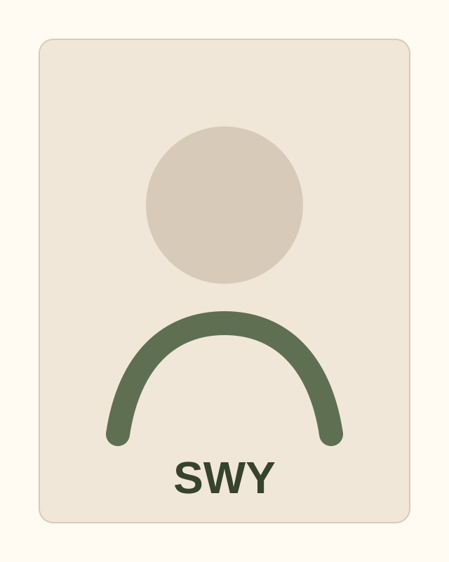

常用工具清单
记录常用的软件、网站和技术。

01 / About
这里写一段 80 到 150 字的自我介绍：你正在关注什么、擅长什么、希望通过这个网站展示什么。 现在先用占位文字，等你准备好后直接替换即可。
02 / Resources
记录常用的软件、网站和技术。
书籍、文章、课程、播客，和我的短评。
未来可以链接到 Notion、飞书文档、博客文章或 PDF。
03 / Notes
短想法、阶段记录、观察和小结。
网站的第一天：先把结构搭出来，不急着一次写完所有内容。
极简不是空，而是让重要的信息更容易被看见。
以后每增加一个作品，都写清楚背景、过程和结果。
04 / Works
先保留分类框架，等方向明确后再替换成真实领域和项目。
05 / Contact
把这里替换成你的真实邮箱、GitHub和社交平台。